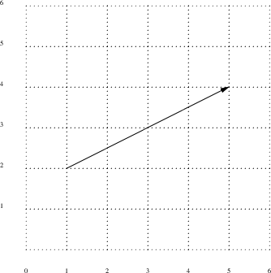
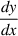
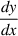
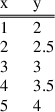
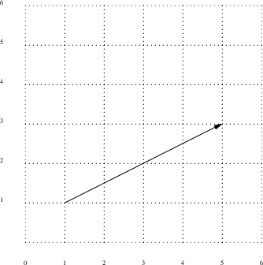
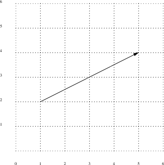
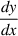
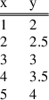

- we know the x position, but we need to compute the y value

 is

is


- also notice how we calculated the gradient


is


bres0.py
#!/usr/bin/env python3
def points (p0, p1):
x0, y0 = p0
x1, y1 = p1
dx = abs(x1-x0)
dy = abs(y1-y0)
if x0 < x1:
sx = 1
else:
sx = -1
if y0 < y1:
sy = 1
else:
sy = -1
err = dx-dy
bres0.py
while True:
print x0, y0
if x0 == x1 and y0 == y1:
return
e2 = 2*err
if e2 > -dy:
# overshot in the y direction
err = err - dy
x0 = x0 + sx
if e2 < dx:
# overshot in the x direction
err = err + dx
y0 = y0 + sy
bres0.py
# # test code # points ([1, 2], [5, 4])
$ python3 bres0.py
1 2 2 2 3 3 4 3 5 4
bres1.py
#!/usr/bin/env python3
class bres:
def __init__ (self, p0, p1):
self.p0 = p0
self.p1 = p1
self.x0 = p0[0]
self.y0 = p0[1]
self.x1 = p1[0]
self.y1 = p1[1]
self.dx = abs(self.x1-self.x0)
self.dy = abs(self.y1-self.y0)
bres1.py
if self.x0 < self.x1:
self.sx = 1
else:
self.sx = -1
if self.y0 < self.y1:
self.sy = 1
else:
self.sy = -1
self.err = self.dx-self.dy
bres1.py
def get_next (self):
if self.x0 == self.x1 and self.y0 == self.y1:
return [self.x1, self.y1]
self.e2 = 2*self.err
if self.e2 > -self.dy:
self.err = self.err - self.dy
self.x0 = self.x0 + self.sx
if self.e2 < self.dx:
self.err = self.err + self.dx
self.y0 = self.y0 + self.sy
return [self.x0, self.y0]
bres1.py
#
# test code
#
w = bres ([1, 2], [5, 4])
p = w.get_next ()
print p
while p != [5, 4]:
p = w.get_next ()
print p
print p
$ python3 bres1.py
[2, 2] [3, 3] [4, 3] [5, 4] [5, 4]
bres.py
#!/usr/bin/env python3
class bres:
def __init__ (self, p0, p1):
self.initial = True
self.end = False
self.p0 = p0
self.p1 = p1
self.x0 = p0[0]
self.y0 = p0[1]
self.x1 = p1[0]
self.y1 = p1[1]
self.dx = abs(self.x1-self.x0)
self.dy = abs(self.y1-self.y0)
bres.py
if self.x0 < self.x1:
self.sx = 1
else:
self.sx = -1
if self.y0 < self.y1:
self.sy = 1
else:
self.sy = -1
self.err = self.dx-self.dy
bres.py
def get_next (self):
if self.initial:
self.initial = False
return [self.x0, self.y0]
if self.x0 == self.x1 and self.y0 == self.y1:
self.end = True
return [self.x1, self.y1]
bres.py
self.e2 = 2*self.err
if self.e2 > -self.dy:
self.err = self.err - self.dy
self.x0 = self.x0 + self.sx
if self.e2 < self.dx:
self.err = self.err + self.dx
self.y0 = self.y0 + self.sy
return [self.x0, self.y0]
def get_current_pos (self):
return [self.x0, self.y0]
def finished (self):
return self.end
bres.py
#
# test code
#
w = bres ([1, 2], [5, 4])
while not w.finished ():
p = w.get_next ()
print p
$ python3 bres.py
[1, 2] [2, 2] [3, 3] [4, 3] [5, 4] [5, 4]
This document was produced using groff-1.22.